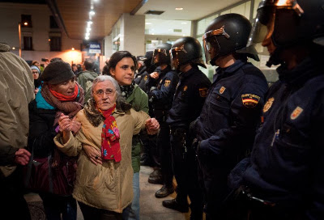

Hemos vivido por debajo de nuestras posibilidades
-->
Hay algo que me produce náusea. Me produce náusea que echen a personas de un edificio que estaba previamente deshabitado. Es inaceptable. Es cierto que quizá en otros casos no, pero las características del caso que a continuación describiré, señala la profunda podredumbre de quien sea que esté al mando de España en este momento.
Cito la noticia,
que resumo a continuación.
Entran unas personas en un edificio que lleva 7 años vacío, desde que se construyó, pretenden hacer un albergue para personas sin hogar, un comedor social y un centro de autoempleo... y llevan a la las Fuerzas y Cuerpos de Seguridad del Estado a sacarlos de allí y los arrestan por robo. ¿Qué mierda es eso? ¿Pero qué mierda de estado representan esos indeseables?

Marhuenda, sé que esta imagen no corresponde a la noticia. Efectvamente tienes razón: es de otra de las muchas que podría poner. Gracias por estar en todo.
A ver, yo he visto gente con mucha cara, gente que no le importa nada más que meterse el dedo en la nariz y sacarse un moco. Pero el desprecio de quien sea que manda ahí hacia la sociedad es simplemente asqueroso. Sé que saldrá mañana un montón de gentuza abriendo la boca para soltar gilipolleces como que la gente quiere todo gratis, que hay que seguir unas normas, que si tenemos que dar confianza e imagen de seriedad... y no sé cuántas más estupideces que ya todos sabíamos. Lo dirá sin más motivo que cubrirse de razones para defender todo este montón de despropósitos que se están cometiendo. Sin entrar en victimismos, me veo obligado a confesar que me repugna el que echen gente a la calle por no sé que puñado de euros de los cuales nunca nadie ha visto más que una mención en el papel de la hipoteca (porque esta sociedad ha construido casas para todos durante los próximos 20 años con los albañiles que levantaron a las constructoras), que me avergüenzo de formar parte de esta especie cuando pienso que hay gente rogando por comida (porque se tiran peces por la borda y producción agrícola para alimentar a toda la población, no sea que vaya a bajar el precio del producto), que hagan mendigar por atención sanitaria (porque hay médicos y enfermeros jugándose el tipo por seguir curando), que pretendan que se hipotequen las familias también por estudiar sus hijos (cuando hay colegios, universidades y profesores para todos)... No hay tertulianos en todas las cadenas suficientes para que yo deje de decir que
HEMOS VIVIDO POR DEBAJO DE NUESTRAS POSIBILIDADES
Que si es lo que se ha votado, que si por favor cumplan con lo prometido, que si sean buenos con nosotros... A la mierda con eso!
Yo me he ido del país. El que pueda, no permita más que se rían de él. El que no pueda abandonarles, que trague con la mierda que le echen o que se dé cuenta de que ya lo tiene todo perdido y pierda el miedo: pon el país patas arriba y haz que sea de su legítimo dueño por primera vez en la historia.